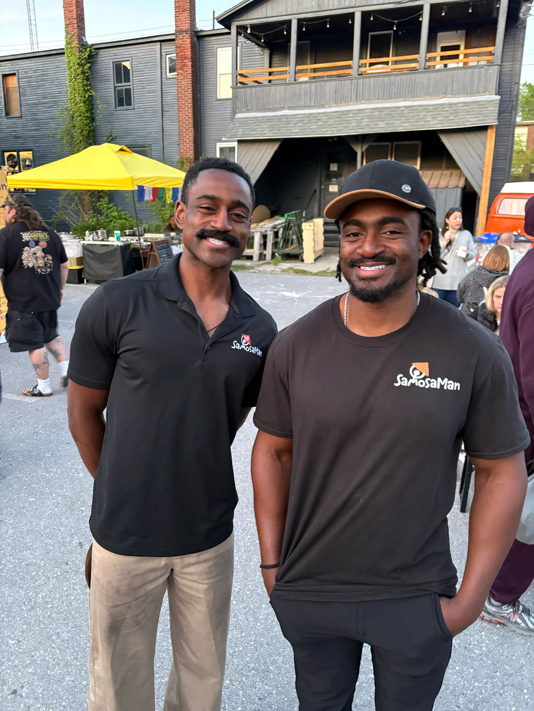

Chapter 01 · The beginning
A new country,
A new country,
a big idea.
In 2001, founder Fuad Ndibalema set up a small cart with one belief: a new home shouldn’t mean leaving your flavors behind. The first samosas were folded by hand, one tray at a time — and that’s never changed.